Chapter 5: Nouns¶
Noun — the naming words
A noun is a word that gives the name of a person, place, thing or feeling. It is the foundation of every sentence — first there is someone, then that someone does something. Nouns have three parts that trip up Indian speakers the most: countable vs uncountable, making plurals, and where the apostrophe goes. All three are in this chapter.
In one line
A noun is a word that names a person, place, thing, animal, or idea. If you can name it, it is a noun.
- My brother works in Chennai. = My brother has a job in Chennai. (a person + a place)
- Honesty is the best policy. Honesty is a noun too — you cannot touch it, but it has a name.
- The team won two matches. The name of a group is a noun, and so is the name of an object.
5.1 Types of noun — a map¶
Nouns are divided in two ways, and both divisions work together. First by kind of name (proper, common, collective, abstract, material), and then by counting (countable, uncountable). One noun will appear in both lists — for example "water" is common and also uncountable.

5.2 The five kinds, in a little more detail¶
| Type | Meaning | Examples | Note |
|---|---|---|---|
| Proper | The own name of one particular thing | Ravi, Ganga, India, Diwali, Toyota | Always starts with a capital letter |
| Common | The general name of a whole class | boy, river, country, festival, car | Small letter, and takes a/an/the |
| Collective | One name for a group of many things | team, family, crowd, class, herd | Looks like one, means many |
| Abstract | Something you cannot touch — a feeling, quality, state | honesty, anger, childhood, freedom | Often uncountable |
| Material | The substance something is made of | gold, cotton, rice, water, iron | Uncountable, so not "a gold" |
Collective noun — singular or plural?
When the whole group acts together, use singular: The team is playing well.
When the members of the group act separately, plural is fine too: The team are arguing among themselves. In India the first form is more common — when in doubt, use singular.
Quick guide — all the types at a glance¶
The five kinds by name were above. Nouns are also looked at in two more ways — can you count it or not (countable / uncountable), and how many words it is made of (compound).
| Type | Question to ask | Examples |
|---|---|---|
| Proper | A special name for one thing? (capital) | Ravi, Delhi, Ganga |
| Common | A general name for a whole class? | boy, city, river |
| Collective | The name of a group? | team, army, herd |
| Material | What is it made of? | gold, wood, cotton |
| Abstract | Can't touch it — a feeling, quality, state? | love, honesty, childhood |
| Countable | Can you count it? (a / an, plural) | a pen, two pens |
| Uncountable | Can't count it? (no a / an, no plural) | water, advice, furniture |
| Compound | Two or more words together making one name? | toothpaste, bus stop, mother-in-law |
Three forms of compound noun
Joined into one word — toothbrush, classroom, sunlight
Written as separate words — bus stop, ice cream, post office
With a hyphen — mother-in-law, passer-by, well-wisher Which form is correct is shown by the dictionary — it comes from habit, not from a rule.
5.3 Countable and Uncountable — this is the biggest trouble¶
In Hindi we say "ek paani", "do advice" and people understand. In English that doesn't work. Some nouns are a heap in English eyes, not pieces — and a heap is not counted, it is measured.
| Countable | Uncountable | |
|---|---|---|
| a / an | a book, an apple | ✗ a water, ✗ an advice |
| Plural | books, apples | ✗ waters, ✗ advices |
| How many? | many, few, a few, number of | much, little, a little, amount of |
| Counting | two books | two glasses of water |
| Verb | These books are new. | This water is cold. |
These nouns are uncountable — never make a plural of them
information, advice, furniture, luggage, equipment, machinery, stationery, news, work, bread, rice, money, traffic, scenery, knowledge, progress, homework, research, hair (all the hair on your head). As soon as you add -s to these, the sentence becomes wrong.
When you need to count, put a measuring word in front — this is the real way:
| Wrong | Right |
|---|---|
| two informations | two pieces of information |
| many advices | a lot of advice / several pieces of advice |
| three furnitures | three pieces of furniture |
| two breads | two slices / loaves of bread |
| four luggages | four bags of luggage |
| a news | a piece of news / some news |
Some nouns are both — and the meaning changes
| Word | Uncountable | Countable |
|---|---|---|
| hair | her hair is long (all the hair) | two hairs in my food (single strands) |
| time | I have no time (time in general) | three times (occasions) |
| paper | I need paper (the material) | today's paper (a newspaper) |
| water | drink water (the liquid) | the waters of the Ganga (literary) |
| experience | he has experience (skill from doing) | a strange experience (one event) |
5.4 Rules for making plurals¶
Most of the time you just add -s. But in eight places it is a little different. Look at the table once, and most of the work is done.
| How the word ends | What to do | Example |
|---|---|---|
| Normal | + s | book → books, pen → pens |
| -s, -ss, -sh, -ch, -x, -z | + es | bus → buses, box → boxes, watch → watches |
| consonant + y | y → ies | city → cities, baby → babies |
| vowel + y | + s (the y stays) | boy → boys, day → days |
| -f, -fe (in some) | f → ves | leaf → leaves, knife → knives, wife → wives |
| -o (in some) | + es | mango → mangoes, hero → heroes, potato → potatoes |
| -o (foreign words) | + s | photos, pianos, radios, zoos |
| Completely different (irregular) | learn by heart | man → men, child → children, tooth → teeth |
Plurals that follow no rule¶
| Singular | Plural | Singular | Plural |
|---|---|---|---|
| man | men | woman | women |
| child | children | person | people |
| tooth | teeth | foot | feet |
| mouse | mice | goose | geese |
| ox | oxen | louse | lice |
| sheep | sheep | deer | deer |
| fish | fish | series | series |
| criterion | criteria | analysis | analyses |
These are always plural
trousers, jeans, scissors, spectacles, glasses, clothes, goods, thanks, surroundings, premises, scales — they have no singular. To talk about one, say: a pair of trousers.
Not "My trouser is dirty" — "My trousers are dirty".
Plural of a compound noun
The -s goes on the main word, not at the end: brothers-in-law, passers-by, *Commanders-in-Chief. But in today's English you may also hear son-in-laws* — in an exam, write the traditional form.
5.5 Possessive — where the apostrophe goes¶
Hindi has "ka, ki, ke". English has 's or of. The rule is simple — first check whether the noun is singular or plural, and whether the plural already ends in -s.
| Situation | Rule | Example |
|---|---|---|
| Singular noun | + 's | my sister's phone |
| Plural ending in -s | just ' | the students' hostel |
| Irregular plural | + 's | the children's books, men's shoes |
| Two people, one thing | 's on the last one | Ram and Shyam's shop (one shop shared) |
| Two people, separate things | 's on both | Ram's and Shyam's shops (two shops) |
| A lifeless thing | use of | the roof of the house |
| Time / measure | 's works | a day's work, two weeks' notice |
its vs it's — 90% of people get this wrong
- Wrong: The dog wagged it's tail.
- Right: The dog wagged its tail.
- Why: its = belonging to it (possessive). it's = it is. Test: put "it is" into the sentence and read it — if it sounds like nonsense, remove the apostrophe.
5.6 Where a noun sits in a sentence¶
| Job | Example | Meaning |
|---|---|---|
| Subject | Ravi called me. | the doer |
| Object | I called Ravi. | what the action fell on |
| Indirect object | I gave Ravi a pen. | who it was for |
| Complement | He became a doctor. | says more about the subject |
| After a preposition | She sat on the chair. | object of a preposition |
| Addressing someone | Sir, may I come in? | the person being called |
5.7 The mistakes we really make¶
The most common Indian-English mistakes with nouns
- Wrong: She is one of my friend.
- Right: She is one of my friends.
-
Why: "One of" means one out of many. When there are many, the noun must be plural. First make the group (my friends), then pick one from it (one of).
-
Wrong: Please give me some informations.
- Right: Please give me some information.
-
Why: Information is uncountable — English sees it as a heap, not pieces. To count it, say two pieces of information.
-
Wrong: He gave me many good advices.
- Right: He gave me a lot of good advice.
-
Why: Advice has no plural, and it doesn't go with "many" either — use "much" or "a lot of". Remember: advice is the noun, advise is the verb.
-
Wrong: She is my cousin sister.
- Right: She is my cousin.
-
Why: "Cousin" is a complete noun — you don't need to add brother or sister. If you want to be specific, say: She is my cousin — my uncle's daughter.
-
Wrong: I bought two new furnitures.
- Right: I bought two new pieces of furniture.
-
Why: Furniture means the whole stock, not single items. To name one item, use its name: a table, a sofa.
-
Wrong: My all luggages are in the car.
- Right: All my luggage is in the car.
-
Why: Two mistakes together: luggage is uncountable (no plural), and the order is "all my", not "my all". With an uncountable noun the verb is singular too — is.
-
Wrong: The peoples of my village are very kind.
- Right: The people of my village are very kind.
-
Why: "People" is already a plural — the plural of person. "Peoples" is used only when you mean different nations or ethnic groups: the peoples of Asia.
-
Wrong: I have two womens in my team.
- Right: I have two women in my team.
- Why: "Women" is already plural. You never add -s again to an irregular plural — not "childrens", not "mens", not "teeths".
5.8 A short thing to remember¶
Three questions for every noun
1. Can it be counted? → if yes, a/an and a plural; if no, no a/an and a singular verb.
2. Whose is it? → if it ends in -s, just ', otherwise 's.
3. One or many? → change the verb to match.
5.9 Practice — Nouns¶
Exercise 1
She is one of my ___ from college.
- friends
- friend
- friend's
- friends'
Hint: After 'one of' comes a group.
Answer
friends
'One of' means one out of many — so the group must be plural. First the group (friends), then one is picked from it.
Exercise 2
I need some ___ about the admission process.
- information
- informations
- an information
- informations'
Hint: This noun is uncountable.
Answer
information
Information is uncountable — English sees it as a heap, so it takes neither -s nor a/an. To count it, say 'two pieces of information'.
Exercise 3
Which plural is correct?
- children
- childrens
- childs
- childrens'
Answer
children
The plural of child is children — it is irregular. You don't add -s to an irregular plural, so 'childrens' is always wrong.
Exercise 4
The ___ hostel is behind the library. (the hostel of many students)
- students'
- student's
- students
- students's
Hint: The plural already ends in -s.
Answer
students'
The plural 'students' already ends in -s, so only the apostrophe is added — no second s. For one student it would be student's.
Exercise 5
The dog wagged ___ tail happily.
Hint: You need a possessive, not 'it is'.
Answer
its
'its' is the possessive — belonging to it. 'it's' means 'it is', and 'the dog wagged it is tail' would be nonsense.
Exercise 6
Three ___ of furniture arrived yesterday. (a counting word)
Hint: To count an uncountable noun you need a word in between.
Answer
pieces
Furniture is uncountable, so you can't count it directly. You put a measuring word — pieces — in between.
Exercise 7
There is one mistake in this sentence — tap the wrong word.
She is my cousin sister from Nagpur.
Answer
Wrong word: sister.
Corrected: She is my cousin from Nagpur.
In English 'cousin' is a complete word — you don't need to add sister or brother. This habit comes from the Hindi 'cousin behen'.
Exercise 8
Find the wrong word.
He gave me many advices about the exam.
Answer
Wrong word: advices.
Corrected: He gave me a lot of advice about the exam.
Advice is uncountable — it has no plural, and 'many' doesn't go with it. It takes 'much' or 'a lot of'.
Exercise 9
One word is wrong — find it.
My trouser is lying on the bed.
Answer
Wrong word: trouser.
Corrected: My trousers are lying on the bed.
Trousers is always plural, because it has two legs. That is why the verb is 'are' too. To talk about one, say 'a pair of trousers'.
Exercise 10
'Toothpaste', 'bus stop' and 'mother-in-law' — what kind of noun are all three?
- Compound
- Collective
- Abstract
- Material
Hint: How many words are they made of?
Answer
Compound
When two or more words together make one name, it is a compound noun — whether joined (toothpaste), separate (bus stop), or hyphenated (mother-in-law).
Exercise 11
Which noun is uncountable?
- luggage
- bag
- suitcase
- ticket
Hint: It doesn't take 'a', and it has no plural.
Answer
luggage
'luggage' is uncountable — not 'a luggage' or 'luggages'. To count, say 'two pieces of luggage' or 'two bags'. The other three are countable.
Exercise 12
Match each noun to its type.
| A | B |
|---|---|
| Mumbai | abstract noun |
| crowd | material noun |
| kindness | common noun |
| cotton | proper noun |
| chair | collective noun |
Answer
Mumbai — proper noun; crowd — collective noun; kindness — abstract noun; cotton — material noun; chair — common noun
A special name is proper, a group is collective, a feeling or quality is abstract, a substance is material, and the general name of a class is common.
Exercise 13
Put the words in the right order — it uses a possessive.
Words: phone / is / the / My / sister's / on / table
Answer
My sister's phone is on the table
The possessive 's comes right after the owner, and the thing owned comes right after that — sister's phone.
Exercise 14
Say this line aloud. Make the -s at the end of 'friends' clearly heard.
Answer
Say: She is one of my closest friends
We often swallow the final -s, so it sounds like 'one of my friend'. Push the -s out on purpose — that is the fix.
What next?
Write ten sentences from your day and draw a line under every noun — then ask "is it countable?". In two days the uncountable list will stick in your head. The next chapter is Pronoun — the shortcut for a noun.